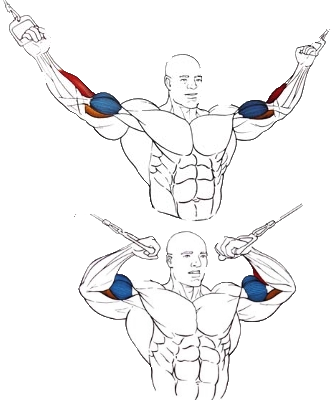

Это упражнение является лучшим вариантом, если вам нужно "выдуть" середину бицепса, и придать ему отчетливую форму.
Исходное положение:
Нужно встать прямо, ноги на ширине плеч.
Взяться за обе рукояти.
Техника выполнения:
медленно подтягивать руки к макушке.
возврат в исходное положение
Рекомендации:
При разгибании рук нужно следить за тем, чтобы груз не опускался полностью и руки постоянно находились в напряженном состоянии.
При выдохе руки сгибаются, при вдохе – разгибаются.
Количество повторений: 8-12. Количество подходов: 1-2.